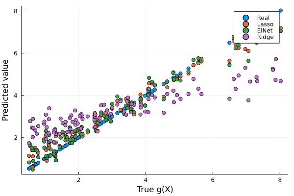
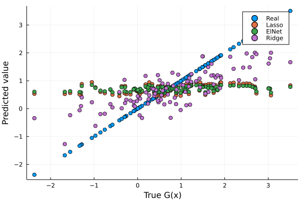

Penalized Linear Regressions: A Simulation Experiment
Contents
Julia code replication of: ” https://www.kaggle.com/victorchernozhukov/r-notebook-linear-penalized-regs “
This notebook contains an example for teaching.
Penalized Linear Regressions: A Simulation Experiment#
Data Generating Process: Approximately Sparse#
# #Needed Packages and extra just in case
# Pkg.add( "GLMNet" )
# Pkg.add("Plots")
# Pkg.add("Lathe")
# Pkg.add("GLM")
# Pkg.add("StatsPlots")
# Pkg.add("MLBase")
# Pkg.add("CSV")
# Pkg.add("DataFrames")
# Pkg.add("Dates")
# Pkg.add("Plots")
# Pkg.add("Lasso")
# Pkg.add( "Distributions" )
using Pkg
using CSV
using DataFrames
using Dates
using Plots
# Load the installed packages
using DataFrames
using CSV
using Plots
using Lathe
using GLM
using Statistics
# using StatsPlots
using MLBase
using Lasso
# Import functions
using LinearAlgebra, GLM, DataFrames, Statistics, Random
using Distributions
using GLMNet
┌ Info: Precompiling Plots [91a5bcdd-55d7-5caf-9e0b-520d859cae80]
└ @ Base loading.jl:1423
# Random.seed!(1234)
TaskLocalRNG()
n = 100
p = 400
Z = rand( Uniform( 0, 1 ), n ) .- 0.5
W = reshape( rand( Uniform( 0, 1 ), n * p ), n, p )
beta = ( 1 ./ range( 1, p, step = 1 ) ) .^ 2
gX = exp.( Z .* 4 ) + W * beta
X = hcat( Z, Z .^ 2, Z .^ 3, W )
mean = 0
sd = 1
Y = gX + randn( n )
print( "theoretical R2:", var(gX) / var( Y ) )
plt = plot( gX, Y,
seriestype = :scatter,
title = "Y vs g(X)",
label = "",
lw = 3)
xlabel!( "g(X)" )
ylabel!( "Y" )
display( plt )
theoretical R2:0.8840363165570461
We use package Glmnet to carry out predictions using cross-validated lasso, ridge, and elastic net
fit_lasso_cv = glmnetcv(X, Y, alpha = 1)
fit_ridge = glmnetcv(X, Y, alpha=0)
fit_elnet = glmnetcv(X, Y, alpha=.5)
yhat_lasso_cv = GLMNet.predict( fit_lasso_cv, X )
yhat_ridge = GLMNet.predict( fit_ridge, X )
yhat_elnet = GLMNet.predict( fit_elnet, X )
data = DataFrame( lasso_cv = ( gX - yhat_lasso_cv ) .^ 2,
ridge = ( gX - yhat_ridge ) .^ 2,
elnet = ( gX - yhat_elnet ) .^ 2 )
lasso_mse_fit = fit( LinearModel, @formula( lasso_cv ~ 1 ), data )
ridge_mse_fit = fit( LinearModel, @formula( ridge ~ 1 ), data )
elnet_mse_fit = fit( LinearModel, @formula( elnet ~ 1 ), data )
MSE_lasso_cv = [ GLM.coef( lasso_mse_fit )[ 1 ], stderror( lasso_mse_fit )[1] ]
MSE_ridge = [ GLM.coef( ridge_mse_fit )[ 1 ], stderror( ridge_mse_fit )[1] ]
MSE_elnet = [ GLM.coef( elnet_mse_fit )[ 1 ], stderror( elnet_mse_fit )[1] ]
2-element Vector{Float64}:
0.2321188265804949
0.03590433444686037
Here we compute the lasso and ols post lasso using plug-in choices for penalty levels, using package hdm
# include("hdmjl/hdmjl.jl")
# fit(LassoModel,
Data = DataFrame(X)
Data.y = Y
select!(Data, :y, All())
1
# sum(term.([1; names(Data, Not(:x1))]))
fit_rlasso = fit(LassoModel, term(:y) ~ sum(term.(names(Data, Not(:y)))), Data)
yhat_rlasso = Lasso.predict(fit_rlasso)
data_y = DataFrame()
data_y.yh_lasso = (yhat_rlasso - gX).^2
## Lasso post
# x_data = DataFrame(X, :auto)
# y_data = DataFrame([Y[:, 1]], :auto)
# rlass_post = rlasso_arg(x_data, y_data, nothing, true, true, true, false, false,
# nothing, 1.1, nothing, 5000, 15, 10^(-5), -Inf, true, Inf, true)
# fit_rlasso_post = rlasso(rlass_post)
mse_lasso_fit = fit(LinearModel, @formula(yh_lasso ~ 1), data_y)
mse_lasso = [GLM.coef(mse_lasso_fit), GLM.stderror(mse_lasso_fit)]
Next we code up lava, which alternates the fitting of lasso and ridge
function lava_pred(X, Y, ddata, iter = 4)
fit_lasso = fit(LassoModel, term(:y) ~ sum(term.(names(ddata, Not(:y)))), ddata)
fit_glm = GLMNet.glmnet(X, Y, alpha = 0, nlambda = 20)
g1 = Lasso.predict(fit_lasso)
m1 = GLMNet.predict(fit_glm, X)
m1 = Statistics.mean.(eachrow(m1))
i = 1
while i <= iter
lasso_df = DataFrame(X, :auto)
lasso_df.y = Y - m1
g1 = Lasso.predict(
fit(LassoModel, term(:y) ~ sum(term.(names(ddata, Not(:y)))), lasso_df)
)
m1 = GLMNet.predict(
GLMNet.glmnet(X, Y - g1, alpha = 0, nlambda = 20),
X
)
m1 = Statistics.mean.(eachrow(m1))
# m1 = max(eachrow(m1))
print("Interaccion n $i \n")
i += 1
end
return m1 + g1
end
y_hat_lava = lava_pred(X, Data.y, Data, 5)
y_data.y_hat_lava = (y_hat_lava - gX).^2
lava = fit(LinearModel, @formula(y_hat_lava ~ 1), y_data)
mse_lava = [GLM.coef(lava), GLM.stderror(lava)]
Summary#
msa = [MSE_lasso_cv[1], MSE_ridge[1], MSE_elnet[1], mse_lava[1]]
se_msa = [MSE_lasso_cv[2], MSE_ridge[2], MSE_elnet[2], mse_lava[2]]
model = ["Cross-Validated Lasso", "Cross-Validated Ridge", "Cross-validated Elnel", "Lava"]
DataFrame(Model = model, MSA = msa, SE_for_MSA = se_msa)
| Model | MSA | SE_for_MSA | |
|---|---|---|---|
| String | Float64 | Float64 | |
| 1 | Cross-Validated Lasso | 0.218296 | 0.0278839 |
| 2 | Cross-Validated Ridge | 1.85149 | 0.239124 |
| 3 | Cross-validated Elnel | 0.232119 | 0.0359043 |
scatter(gX, gX, label = "Real")
scatter!(gX, yhat_lasso_cv, label="RLasso")
scatter!(gX, yhat_elnet, label="ElNet")
scatter!(gX, y_hat_lava, label="Lava n(5)")
yaxis!("Predicted value")
xaxis!("True g(X)")

Data Generating Process: Approximately Sparse + Small Dense Part#
Random.seed!(122109)
n = 100
p = 400
Z = rand(Uniform(0, 1), n) .- 0.5
W = reshape(rand(Uniform(0, 1), n * p), n, p)
beta = rand(Normal(), p) .* .2
gX = exp.(Z * .4) .+ W * beta
X = hcat(Z, Z.^2, Z.^3, W)
Y = gX + rand(Normal(), n)
print( "theoretical R2:", var(gX) / var( Y ) )
plt = plot( gX, Y,
seriestype = :scatter,
title = "Y vs g(X)",
label = "",
lw = 3)
xlabel!( "g(X)" )
ylabel!( "Y" )
theoretical R2:0.5849412836462625
fit_lasso_cv = glmnetcv(X, Y, alpha = 1)
fit_ridge = glmnetcv(X, Y, alpha=0)
fit_elnet = glmnetcv(X, Y, alpha=.5)
yhat_lasso_cv = GLMNet.predict( fit_lasso_cv, X )
yhat_ridge = GLMNet.predict( fit_ridge, X )
yhat_elnet = GLMNet.predict( fit_elnet, X )
data = DataFrame( lasso_cv = ( gX - yhat_lasso_cv ) .^ 2,
ridge = ( gX - yhat_ridge ) .^ 2,
elnet = ( gX - yhat_elnet ) .^ 2 )
lasso_mse_fit = fit( LinearModel, @formula( lasso_cv ~ 1 ), data )
ridge_mse_fit = fit( LinearModel, @formula( ridge ~ 1 ), data )
elnet_mse_fit = fit( LinearModel, @formula( elnet ~ 1 ), data )
MSE_lasso_cv = [ GLM.coef( lasso_mse_fit )[ 1 ], stderror( lasso_mse_fit )[1] ]
MSE_ridge = [ GLM.coef( ridge_mse_fit )[ 1 ], stderror( ridge_mse_fit )[1] ]
MSE_elnet = [ GLM.coef( elnet_mse_fit )[ 1 ], stderror( elnet_mse_fit )[1] ]
2-element Vector{Float64}:
1.2743325116280952
0.17891432998098805
Here we compute the lasso and ols post lasso using plug-in choices for penalty levels, using package hdm
# include("hdmjl/hdmjl.jl")
# fit(LassoModel,
Data = DataFrame(X)
Data.y = Y
select!(Data, :y, All())
1
# sum(term.([1; names(Data, Not(:x1))]))
fit_rlasso = fit(LassoModel, term(:y) ~ sum(term.(names(Data, Not(:y)))), Data)
yhat_rlasso = Lasso.predict(fit_rlasso)
data_y = DataFrame()
data_y.yh_lasso = (yhat_rlasso - gX).^2
## Lasso post
# x_data = DataFrame(X, :auto)
# y_data = DataFrame([Y[:, 1]], :auto)
# rlass_post = rlasso_arg(x_data, y_data, nothing, true, true, true, false, false,
# nothing, 1.1, nothing, 5000, 15, 10^(-5), -Inf, true, Inf, true)
# fit_rlasso_post = rlasso(rlass_post)
mse_lasso_fit = fit(LinearModel, @formula(yh_lasso ~ 1), data_y)
mse_lasso = [GLM.coef(mse_lasso_fit), GLM.stderror(mse_lasso_fit)]
Next we code up lava, which alternates the fitting of lasso and ridge
function lava_pred(X, Y, ddata, iter = 4)
fit_lasso = fit(LassoModel, term(:y) ~ sum(term.(names(ddata, Not(:y)))), ddata)
fit_glm = GLMNet.glmnet(X, Y, alpha = 0, nlambda = 20)
g1 = Lasso.predict(fit_lasso)
m1 = GLMNet.predict(fit_glm, X)
m1 = Statistics.mean.(eachrow(m1))
i = 1
while i <= iter
lasso_df = DataFrame(X, :auto)
lasso_df.y = Y - m1
g1 = Lasso.predict(
fit(LassoModel, term(:y) ~ sum(term.(names(ddata, Not(:y)))), lasso_df)
)
m1 = GLMNet.predict(
GLMNet.glmnet(X, Y - g1, alpha = 0, nlambda = 20),
X
)
m1 = Statistics.mean.(eachrow(m1))
# m1 = max(eachrow(m1))
print("Interaccion n $i \n")
i += 1
end
return m1 + g1
end
y_hat_lava = lava_pred(X, Data.y, Data, 5)
y_data.y_hat_lava = (y_hat_lava - gX).^2
lava = fit(LinearModel, @formula(y_hat_lava ~ 1), y_data)
mse_lava = [GLM.coef(lava), GLM.stderror(lava)]
Summary#
msa = [MSE_lasso_cv[1], MSE_ridge[1], MSE_elnet[1], mse_lava[1]]
se_msa = [MSE_lasso_cv[2], MSE_ridge[2], MSE_elnet[2], mse_lava[2]]
model = ["Cross-Validated Lasso", "Cross-Validated Ridge", "Cross-validated Elnel", "Lava"]
DataFrame(Model = model, MSA = msa, SE_for_MSA = se_msa)
| Model | MSA | SE_for_MSA | |
|---|---|---|---|
| String | Float64 | Float64 | |
| 1 | Cross-Validated Lasso | 1.23345 | 0.17609 |
| 2 | Cross-Validated Ridge | 0.548725 | 0.076708 |
| 3 | Cross-validated Elnel | 1.27433 | 0.178914 |
scatter(gX, gX, label = "Real")
scatter!(gX, yhat_lasso_cv, label="Lasso")
scatter!(gX, yhat_elnet, label="ElNet")
scatter!(gX, yhat_ridge, label="Ridge")
scatter!(Gx, y_hat_lava, lavel="Lava n(5)")
yaxis!("Predicted value")
xaxis!("True G(x)")
